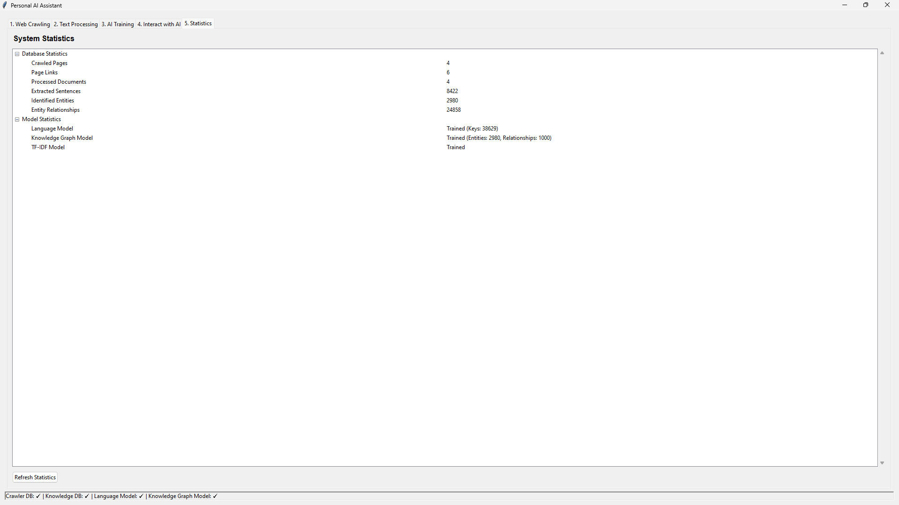
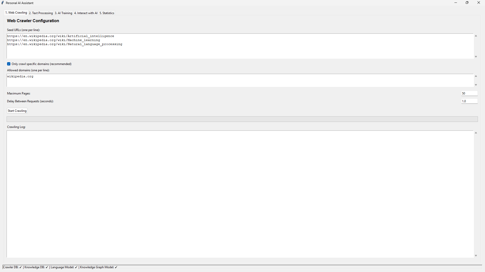
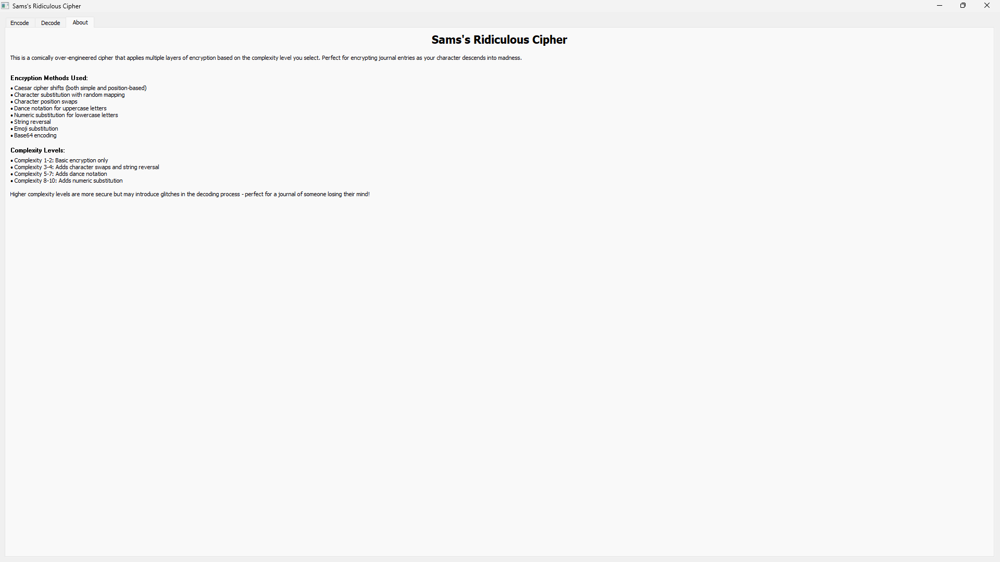
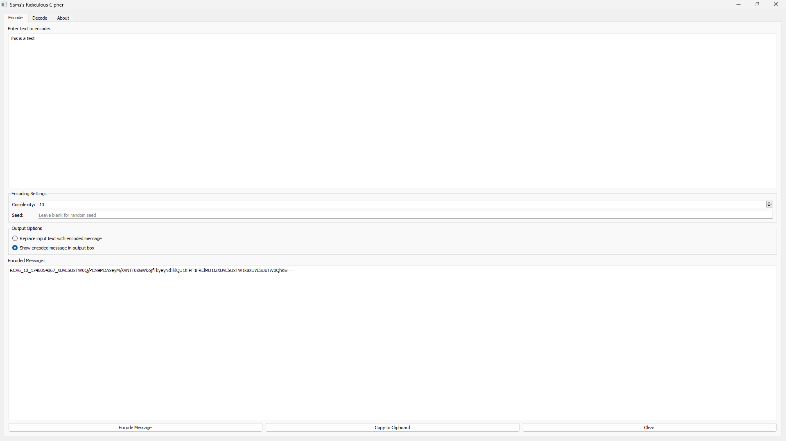

AI Dungeon Master

Unity
Python
C#
Flask
LLM API
HuggingFace
An innovative text-based RPG system that integrates large language models to create dynamic storytelling experiences with consistent game mechanics. This project combines traditional RPG elements with AI-driven narrative generation to create unique adventures that adapt to player choices while maintaining mechanical consistency.
Key Features
- Dynamic AI-powered storytelling that adapts to player choices
- Sophisticated memory management system that tracks character progression, world state, and narrative events
- Constraint layer ensuring consistent RPG mechanics and game rules
- Flexible combat system that adapts to tactical or narrative player preferences
- Model selection UI allowing users to choose different language models based on their hardware capabilities
- Seamless integration between Unity frontend and Python backend via Flask server
System Architecture
The system uses a Unity frontend for user interaction while leveraging a Python backend for AI integration and model management.
Technical Implementation
The project is built around several key components:
// Game Manager - Core coordination between systems
public IEnumerator GameLoop() {
while (true) {
// Wait for player input
yield return new WaitUntil(() => Input.GetKeyDown(KeyCode.Return));
string playerInput = uiManager.GetPlayerInput();
uiManager.ClearInput();
// Display player input
uiManager.DisplayOutput("Player: " + playerInput);
// Generate AI response
yield return aiManager.GenerateResponse(playerInput, (response) => {
uiManager.DisplayOutput("AI: " + response);
memoryManager.AddMemory(response, 3, new List<string> { "story" });
});
// Maintain memory system
memoryManager.PerformMemoryMaintenance();
uiManager.FocusInputField();
}
}
The Memory Management system is a critical component that allows the AI to maintain context awareness across the game session:
public class MemoryManager : MonoBehaviour {
private List<MemoryItem> memories = new List<MemoryItem>();
public void AddMemory(string content, int importance, List<string> categories) {
memories.Add(new MemoryItem {
content = content,
importance = importance,
categories = categories,
timestamp = DateTimeOffset.Now.ToUnixTimeSeconds()
});
}
public List<string> GetRelevantMemories(string context, int count) {
return memories
.OrderByDescending(m => m.importance * (1.0 / (DateTimeOffset.Now.ToUnixTimeSeconds() - m.timestamp)))
.Take(count)
.Select(m => m.content)
.ToList();
}
}
Development Journey
October 2023
Initial concept development and research into AI integration with game systems
November 2023
Development of Unity frontend and basic UI elements for text interaction
December 2023
Implementation of Python backend with Flask server and initial model integration
January 2024
Creation of Memory Management system for context retention and narrative consistency
February 2024
Development of model selection UI and integration of multiple language models
March 2024
Implementation of constraint system for game mechanics and RPG rules
April 2024
Final integration and testing with comprehensive game systems
Challenges & Solutions
One of the most significant challenges was ensuring consistent RPG mechanics while allowing the AI creative freedom for storytelling. I developed a constraint layer that filters AI responses to ensure they conform to game rules while preserving narrative flexibility. The memory management system was also complex to implement effectively, requiring careful balancing of memory importance and recency to provide relevant context without overwhelming the AI model.
Future Development
The project is planned to expand with the following features:
- Enhanced character progression system with skill trees and specialized abilities
- Advanced narrative tracking for complex quests and story arcs
- Multiplayer functionality allowing collaborative storytelling
- Custom AI model fine-tuning for improved game-specific responses
- Procedural world generation integrating with AI narrative capabilities
Intelligent Web Learning System

Python
SQLite
NLP
Machine Learning
Knowledge Graphs
Semantic Analysis
An advanced web crawling and knowledge extraction system that autonomously gathers and processes information from the web, creating an organized knowledge base with sophisticated learning capabilities. This project combines web scraping, natural language processing, and machine learning to create an AI system that can extract, organize, and learn from web content.
Key Features
- Responsible web crawler with domain filtering, rate limiting, and robots.txt compliance
- English language detection and content filtering
- Advanced text processing with keyword extraction and summarization
- Entity recognition and relationship extraction
- Sophisticated semantic understanding using transformer-based embeddings
- Hierarchical knowledge organization with concept clustering
- Interactive user interface for crawling, processing, and querying knowledge
System Architecture
The system consists of multiple interconnected components: a web crawler, text processor, learning model, and user interface, all working together to build an intelligent knowledge base.
Technical Implementation
The project is built around several key components:
# ResponsibleWebCrawler - Core crawling engine
class ResponsibleWebCrawler:
def __init__(self, seed_urls, db_path='crawled_data.db', delay=1, allowed_domains=None):
self.seed_urls = seed_urls
self.visited_urls = set()
self.queue = list(seed_urls)
self.delay = delay
self.domain_last_accessed = {}
# Set up domain filtering
self.allowed_domains = None
if allowed_domains:
self.allowed_domains = [domain.replace('www.', '') for domain in allowed_domains]
# Set up database
self.db_path = db_path
self.conn = sqlite3.connect(db_path)
self.create_tables()
def crawl(self, max_pages=100):
pages_crawled = 0
pages_stored = 0
while self.queue and pages_stored < max_pages:
url = self.queue.pop(0)
if self.normalize_url(url) not in self.visited_urls:
source_id, links = self.crawl_page(url)
if source_id:
pages_stored += 1
print(f"Successfully stored page {pages_stored}/{max_pages}: {url}")
for link in links:
if self.normalize_url(link) not in self.visited_urls:
self.queue.append(link)
pages_crawled += 1
The Text Processing component extracts meaningful information from the crawled content:
# TextProcessor - Information extraction
class TextProcessor:
def __init__(self, db_path='crawled_data.db', output_db='knowledge_base.db'):
self.input_conn = sqlite3.connect(db_path)
self.output_conn = sqlite3.connect(output_db)
self.setup_output_db()
def process_page(self, page_id, url, title, content):
# Generate summary and keywords
summary = self.generate_summary(content)
keywords = self.extract_keywords(content)
# Store document
doc_id = self.store_document(url, title, summary, keywords, 'en')
# Extract and store sentences
sentences = self.extract_sentences(content)
sentence_ids = []
for sentence in sentences:
if len(sentence.split()) >= 3: # Skip very short sentences
sent_id = self.store_sentence(doc_id, sentence)
sentence_ids.append(sent_id)
# Extract entities and relationships
self.extract_and_store_knowledge(sentences, sentence_ids)
The advanced Learning Model builds semantic understanding and knowledge organization:
# Enhanced Learning Components
class EnhancedEntityExtractor:
"""Enhanced entity recognition using spaCy NER"""
def __init__(self, knowledge_db_path='knowledge_base.db'):
self.nlp = spacy.load("en_core_web_sm")
self.db_path = knowledge_db_path
self.entity_cache = {}
self.relationship_types = self._load_relationship_types()
def extract_entities(self, text):
doc = self.nlp(text)
entities = []
# Extract named entities
for ent in doc.ents:
entity_type = self._map_entity_type(ent.label_)
entities.append((ent.text, entity_type, ent.start_char, ent.end_char))
return entities
class SemanticProcessor:
"""Advanced semantic understanding for text using transformer-based embeddings"""
def __init__(self, knowledge_db_path='knowledge_base.db', model_dir='models'):
self.db_path = knowledge_db_path
self.model_dir = model_dir
self.sentence_model = SentenceTransformer('all-MiniLM-L6-v2')
def semantic_search(self, query, top_k=5):
# Generate query embedding
query_embedding = self.sentence_model.encode(query)
# Calculate similarity to all documents
similarities = cosine_similarity(
query_embedding.reshape(1, -1),
index['embeddings']
)[0]
# Get top-k results
top_indices = similarities.argsort()[-top_k:][::-1]
results = []
for i in top_indices:
doc_id = index['doc_ids'][i]
title = index['doc_titles'][i]
score = similarities[i]
results.append((doc_id, title, score))
return results
User Interface
The system includes a comprehensive GUI built with Tkinter that allows users to:
- Configure and run web crawling jobs with domain filtering
- Process the crawled data to build a knowledge base
- Train AI models on the processed information
- Query the knowledge base with semantic search capabilities
- View detailed statistics about the system's operation
- Access enhanced learning features for improved understanding

The user interface provides intuitive access to all system components and visualizes the knowledge extraction process.
Knowledge Organization
A key innovation in this project is the hierarchical organization of knowledge:
- Entity relationship graphs visualize connections between concepts
- Hierarchical clustering organizes information into logical structures
- Concept clusters group semantically similar content
- Fact classification differentiates between types of information
- Provenance tracking maintains information about knowledge sources
Knowledge graphs visualize the relationships between entities and concepts extracted from web content.
Challenges & Solutions
Building this system involved overcoming several complex challenges:
Challenge
Responsible Crawling: Building a crawler that respects robots.txt, rate limits, and target server capabilities without overwhelming resources.
Solution
Implemented domain-specific delays, robots.txt parsing, and intelligent queue management to ensure ethical crawling practices.
Challenge
Effective Entity Recognition: Identifying entities and relationships in unstructured text without using heavyweight NLP libraries.
Solution
Created a hybrid approach using lightweight pattern recognition combined with more sophisticated NLP when available, with graceful degradation.
Challenge
Memory and Performance: Processing large volumes of web content while maintaining reasonable memory usage and performance.
Solution
Implemented batch processing, optimized database queries, thread-local storage, and selective persistence of embeddings and models.
Future Development
The project has a comprehensive roadmap for future improvements:
- Multi-hop reasoning for connecting facts across documents
- Advanced linguistic capabilities including coreference resolution
- Multilingual support for processing content in multiple languages
- Fact verification and contradiction detection
- Incremental learning to update knowledge without full reprocessing
- Interactive knowledge visualization tools
Technologies Used
This project leverages a variety of technologies:
- Core Processing: Python, SQLite, requests, Beautiful Soup
- Natural Language Processing: spaCy, langdetect, regex pattern matching
- Machine Learning: scikit-learn, sentence-transformers, numpy
- Knowledge Representation: NetworkX for graph algorithms, Matplotlib for visualization
- User Interface: Tkinter, ttk for modern styling
- Advanced Algorithms: UMAP for dimensionality reduction, DBSCAN and KMeans for clustering
Ridiculous Cipher Application

Python
PyQt5
Cryptography
GUI Development
Base64
PyInstaller
An intentionally over-engineered encryption application designed to create comically complex ciphers with multiple layers of encryption. The project combines traditional cryptographic techniques with unconventional transformations to create a unique enciphering experience. Designed primarily for a tabletop RPG campaign to simulate a character descending into madness through increasingly corrupted journal entries.
Key Features
- Adjustable complexity levels (1-10) that progressively add more encryption layers
- Unique seed-based encryption ensuring consistent encryption/decryption across sessions
- Multiple encryption techniques including Caesar shifts, substitution ciphers, and more
- Playful "dance notation" that adds choreography instructions to uppercase letters
- Emoji substitution for lowercase characters to create visually distinctive patterns
- Character position swapping based on deterministic algorithms
- Intuitive GUI interface with encoding/decoding tabs and user-friendly controls
- Cross-platform standalone executable built with PyInstaller
Encryption Layers by Complexity Level
The cipher progressively adds more encryption layers as the complexity level increases, creating increasingly complex (and potentially corrupted) output at higher levels.
Technical Implementation
The project revolves around a core cipher class that handles all encryption and decryption processes:
class ReliableRidiculousCipher:
"""
A comically absurd cipher that works reliably at all complexity levels.
This version prioritizes reliability while maintaining the ridiculous nature.
"""
def __init__(self, complexity=5, seed=None):
self.complexity = min(max(complexity, 1), 10)
self.seed = seed if seed is not None else int(time.time())
random.seed(self.seed)
# Generate various substitution tables
self.char_map = self._generate_char_map()
self.emoji_map = self._generate_emoji_map()
self.numeric_map = self._generate_numeric_map()
self.dance_moves = self._generate_dance_moves()
# Create various wacky parameters
self.shifts = [random.randint(1, 25) for _ in range(10)]
self.swap_positions = self._generate_swaps(100)
The encoding process applies successive transformations based on the selected complexity level:
def encode(self, plaintext):
"""Encode the text using multiple layers of transformation."""
if not plaintext:
return ""
# Apply encoding steps based on complexity
encoded = plaintext
steps_applied = []
# Step 1: Simple Caesar shift
shift = (self.complexity * 3) % 26
encoded = self._caesar_shift(encoded, shift)
steps_applied.append("Caesar shift")
# Step 2: Character substitution
encoded = self._apply_substitution(encoded)
steps_applied.append("Character substitution")
# Step 3: Multiple position-based Caesar shifts
encoded = self._apply_multiple_caesar(encoded)
steps_applied.append("Position-based Caesar shifts")
# Additional steps based on complexity level...
# Format: RCV6___
encoded_prefix = f"RCV6_{self.complexity}_{self.seed}_"
final_encoded = encoded_prefix + encoded
return final_encoded, json.dumps(full_format)
GUI Implementation

The PyQt5-based interface provides tabs for encoding and decoding, with options to adjust complexity and set custom seeds.
The application is built with a user-friendly interface that provides clear controls and feedback:
class CipherGUI(QMainWindow):
"""GUI Application for the Ridiculous Cipher"""
def __init__(self):
super().__init__()
self.setWindowTitle("Kevin's Ridiculous Cipher")
self.setGeometry(100, 100, 800, 600)
# Initialize the cipher
self.cipher = ReliableRidiculousCipher()
# Create the main widget and layout
self.central_widget = QWidget()
self.setCentralWidget(self.central_widget)
self.layout = QVBoxLayout(self.central_widget)
# Create tabs
self.tabs = QTabWidget()
self.encode_tab = QWidget()
self.decode_tab = QWidget()
self.about_tab = QWidget()
# Set up encode/decode functionality
self.setup_encode_tab()
self.setup_decode_tab()
self.setup_about_tab()
Encryption Methods
The cipher employs a variety of intentionally quirky encryption techniques:
Caesar Shifts
Both fixed and position-based shifts that rotate letters through the alphabet by varying amounts
Character Substitution
Complete character mapping based on randomized but deterministic substitution tables
String Reversal
Complete inversion of the character sequence at higher complexity levels
Character Swapping
Precise character position swaps based on predetermined patterns
Dance Notation
Injecting choreography instructions after uppercase letters (e.g., "K[MOONWALK]")
Emoji Substitution
Replacing lowercase letters with ASCII emoji representations (e.g., ":-)")
Numeric Encoding
Substituting letters with numeric codes at higher complexity levels
Base64 Encoding
Final layer wrapping all previous transformations in standard Base64 encoding
Development Journey
The development of this cipher evolved through several phases to achieve the perfect balance between absurdity and functionality:
Initial Concept
Started as a simple script to create interesting-looking encoded text for an RPG character's journal
Feature Expansion
Progressively added more encryption layers to increase the complexity and visual distinctiveness
Reliability Issues
Encountered challenges with consistently decoding highly complex ciphers, especially with special characters
Refinement
Balanced the system to allow occasional decoding "glitches" at high complexity levels, which actually enhanced the narrative experience
GUI Development
Created a user-friendly interface with PyQt5 to make the cipher accessible to non-technical users
Deployment
Packaged the application as a standalone executable using PyInstaller for easy distribution
Challenges & Solutions
Creating this intentionally complex but still functional cipher presented several interesting challenges:
Challenge
Balancing Complexity and Reliability: Making a cipher that was deliberately over-engineered but still functional.
Solution
Implemented a complexity scale that allowed users to choose how many encryption layers to apply, with higher levels introducing controlled chaos.
Challenge
Consistent Encryption/Decryption: Ensuring the same message could be consistently encoded and decoded across different sessions.
Solution
Developed a seed-based system that embeds all necessary encryption parameters within the encoded message itself, making it self-contained.
Challenge
Handling Special Characters: Processing Unicode and special characters that often broke encryption patterns.
Solution
Created robust fallback mechanisms for character handling while limiting transformations to the most reliable character sets.
Challenge
Cross-Platform Compatibility: Ensuring the application worked consistently across different operating systems.
Solution
Used PyQt5 for the GUI and PyInstaller for packaging, with careful attention to platform-specific quirks and dependencies.
In-Game Application
The Ridiculous Cipher was developed specifically for use in a Dungeons & Dragons campaign, where it serves several narrative purposes:
- Creating journal entries for a character gradually losing their grip on reality
- The increasing complexity settings mirror the character's descent into madness
- "Glitches" in decoding at higher complexity levels represent corrupted memories or thoughts
- Players must decode the encrypted messages to uncover plot elements and character development
- The dance notation aspect adds a surreal element that suggests the character's neurological deterioration
- The dungeon master can control exactly how coherent or fragmented recovered memories appear
Technologies Used
- Core Language: Python 3.10+
- GUI Framework: PyQt5 for cross-platform user interface
- Cryptographic Elements: Base64, substitution ciphers, Caesar shifts
- Regular Expressions: For pattern matching in dance notation and emoji processing
- Packaging: PyInstaller for creating standalone executables
- Random Number Generation: Seeded RNG for reproducible encryption patterns
Conclusion
The Ridiculous Cipher project demonstrates how technical skills can enhance creative storytelling in unexpected ways. By combining cryptography principles with deliberate over-engineering, this application creates a unique tool that serves both as a functional encryption system and as a narrative device for character development in role-playing games.
The project showcases my ability to blend technical implementation with creative applications, addressing complex challenges while maintaining a playful approach to software development. The resulting standalone application is accessible to non-technical users while containing sophisticated encryption logic under the hood.